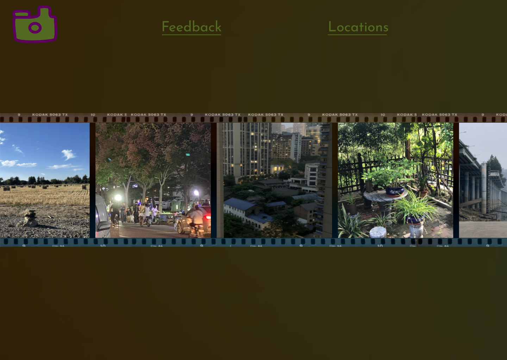
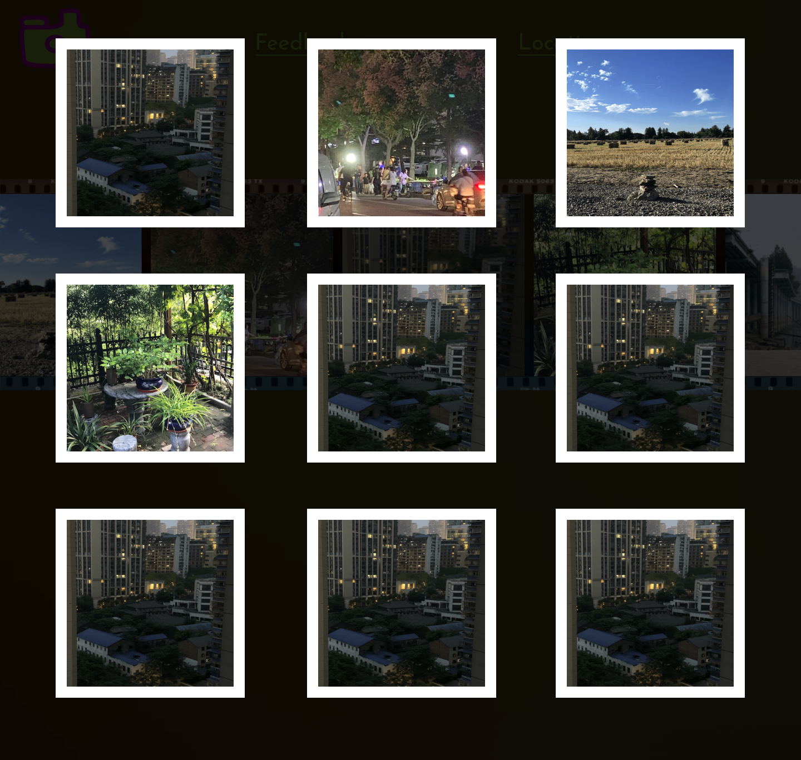

The main objective in this testing process is observing how the users would react to the new buttons I plan to add in the page, and whether it makes sense to add them. The two main buttons I have added are the "feedback" and "locations" button. Since I don't have a working website yet, I made a prototype of the finished product for this test. During the user test I want ask the users to explore the prototype, and see their reactions to different functions on the page.
I plan to add a doodle, and two buttons on the landing page. The doodle I initially wanted to have it as a home button but later realized it might not work during the process of making the prototype. The questions I want to ask the users are: Does the doodle look confusing? Do you think there's contrasting issues, or do you have suggestions on improving the aesthetics?
For the gallery part, I just plan to organize it in very basic lines and rows, with borders around it for each picture. I will ask the users whether this is intuitive for them to look at.
The feedback function is the main thing I want to add for the final, I want to get an overall comment on the whole experience of goinf through the buttons.
User 1: Responded very positively to the aesthetics of the whole page, user thought the color of the button doesn't have enough contrasts with the background which makes it difficult to find. User said the layout of gallery is very intuitive and it makes sense to scroll down. User responds postively on the process of giving feedback.
User 2: User commented on the locations button, and said I can add post tags as the buttons for the locations part, so that it reminds people more of traveling. User suggested to have the feedbacks part as a part of the overlay in the slider so that it can show up as a button when you click open the overlay, and when you click that button another overlay of the feedbacks can show.
User 3: User commented on the usability of my feedback section, and said without more descriptions of what it is for people might feel confused. User suggested I can change the wording of it a bit, or just have it as a part of the overlay when you click on the images in the slider, that might make it more clear. Check the contrast of the button to the background. User said that the doodle at the top looks like a button, maybe consider adding some function to it.
I think overall my designs in the prototype is effective, I change the wording of the buttons to something like: "send me a message", and I will probably move it to the overlay for when you click on the images in the slider. Then I will definitely add more descriptive texts to the pictures.